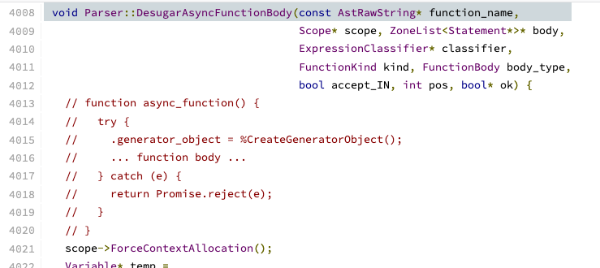

Javascript Iterators and Generators
Our motivating example
The Pomodoro Technique for time management
The pomodoro technique is a time management tool which
alternates between periods of focused work and shorter periods of rest.
- Focus on a task for 25 minutes
- Rest for 5 minutes
- Focus on a task for 25 minutes
- Rest for 5 minutes
- Focus on a task for 25 minutes
- Rest for 5 minutes
- Focus on a task for 25 minutes
- Rest for 20 minutes
Code for the pomodoro timer
In JavaScript an iterator is an object which defines a sequence and potentially a return value upon its termination.
interface Iterator {
next(): {
done: boolean, // True if there are more
// elements in the sequence
value: any // The latest element of the sequence
};
}
const arrayIterator = [1, 2, 3][Symbol.iterator]();
console.log(arrayIterator.next());
// { value: 1, done: false }
console.log(arrayIterator.next());
// { value: 2, done: false }
console.log(arrayIterator.next())
// { value: 3, done: false }
console.log(arrayIterator.next())
// { value: undefined, done: true }
Code for the pomodoro timer using iterators
Critique of the code (again)
While custom iterators are a useful tool, their creation requires careful programming due to the need to explicitly maintain their internal state. Generator functions provide a powerful alternative: they allow you to define an iterative algorithm by writing a single function whose execution is not continuous.
function *countToThree() {
yield 1; // Pass control
yield 2;
yield 3;
}
const counting = countToThree();
console.log(counting.next());
// { value: 1, done: false }
console.log(counting.next());
// { value: 2, done: false }
Code for the pomodoro timer using generators
Chrome's Javascript Engine
